Webpage: https://cal-cs184-student.github.io/hw3-diego-jiang-writeup/
GitHub repository: https://github.com/cal-cs184-student/hw3-diego-jiang
This homework builds a path tracer from camera rays to full global illumination. I started with pixel sampling and intersections with triangles and spheres, then added a BVH to skip large groups of primitives during intersection tests. Next, I implemented diffuse reflection and compared direct lighting from uniform hemisphere sampling with sampling the lights directly. Recursive BSDF sampling added indirect light, Russian Roulette reduced the number of long paths, and adaptive sampling let individual pixels stop once their brightness estimates were stable enough.
The comparisons show why both light transport and sampling strategy matter. Indirect bounces light the ceiling and the bunny's underside and carry color from the walls onto nearby surfaces. Sampling the lights directly reduces grain, while adaptive sampling concentrates rays in areas that take longer to converge. The BVH timing experiment also showed how much acceleration matters: the same Cow render dropped from 45.6523 seconds to 0.1947 seconds.
Camera rays and pixel sampling. I placed a virtual sensor one unit in front of the camera, at z = -1 in camera space. The horizontal and vertical fields of view determine the sensor's half-width and half-height through the tangent of each half-angle. I mapped normalized image coordinates onto that rectangle so that the center points straight ahead and the corners point outward. I rotated the direction into world space, normalized it, and used the camera position as the ray's origin. The near and far clipping distances set the ray's initial valid range.
For each pixel, I picked random positions inside its unit square, divided their image coordinates by the image width and height, and generated one ray per sample. I traced each ray and stored the average of the returned colors. Taking several samples gives a pixel a chance to see both sides of an edge that crosses it. Before implementing intersections, I checked the camera and sampling code by rendering the starter program's ray-direction gradient.
Triangle intersection. I used the Moller-Trumbore algorithm. It solves for where the ray crosses the triangle's plane while also finding two barycentric coordinates, u and v. A zero determinant means there is no unique crossing. The three weights are 1 - u - v, u, and v; if any weight is negative, the crossing lies outside the triangle. I also reject crossings outside the ray's valid range. When a hit is accepted, I shorten the ray's maximum distance so a farther primitive cannot replace it. For a full hit record, I use the same weights to blend the vertex normals, normalize the result, and store the hit distance, primitive, and material.
Sphere intersection. I substituted the ray equation into the sphere equation and solved the resulting quadratic. The two roots represent where the ray enters and exits the sphere. I use the closest root within the ray's valid range; for a ray starting inside the sphere, that is the exit point. The surface normal is the normalized direction from the sphere's center to the hit point.
Normal-shaded results. These renders use surface normals as debug colors. The spheres show smooth color changes as the surface turns, while the gems and cube show sharp changes where adjacent faces point in different directions.
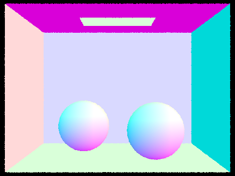
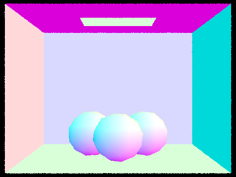
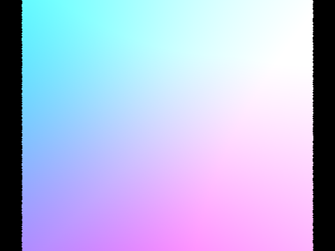
I build the BVH recursively. Each node gets a bounding box that encloses all the primitives in its range. If the range fits within the maximum leaf size, the node stores the range and stops splitting. Otherwise, I find the axis along which the primitive bounding-box centers spread out the most, and split at the median center along that axis. Using the widest axis helps separate the two groups spatially, and splitting by median keeps both groups nonempty even when several centers coincide. I then build a child for each half.
To test a ray against a node, I find when it is between the two box faces along each axis and intersect those intervals with the ray's valid range. If the intervals do not overlap, I skip the entire node. At a leaf I test only the primitives in that leaf. An any-hit query stops at the first hit; a closest-hit query checks both children when their boxes can still contain a closer hit. Each primitive hit shortens the ray's maximum distance, which lets later box tests skip branches beyond that hit.
Both runs for each scene used 800 × 600 pixels, 8 threads, and 1 sample per pixel.
| Scene | Without BVH | With BVH | Speedup |
|---|---|---|---|
| Cow | 45.6523 s | 0.1947 s | 234× |
| Banana | 17.6929 s | 0.1330 s | 133× |
The BVH brought both renders below 0.2 seconds. Cow had the larger speedup: without the BVH it took more than twice as long as Banana, but with the BVH the difference was only about 0.06 seconds. The tree avoids testing every primitive for every ray: a single missed box can rule out a whole group of triangles.
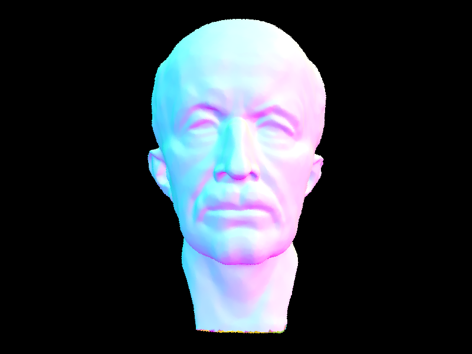
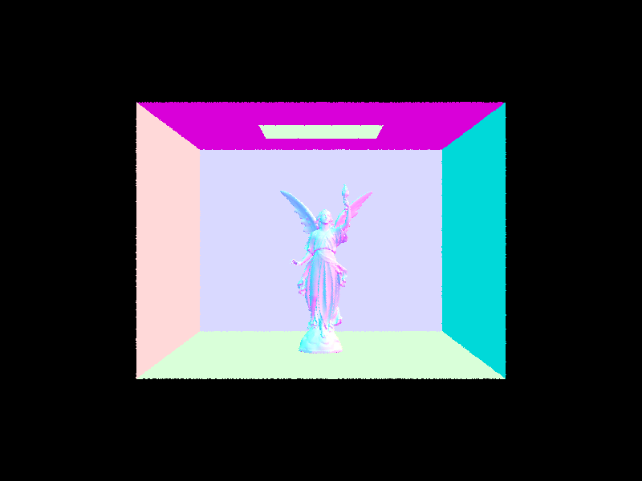
I added Lambertian diffuse reflection and direct lighting. The diffuse BSDF is the surface's RGB reflectance divided by π. Zero-bounce illumination is the emission of the surface the camera ray hits, which is why the ceiling light itself appears bright. One-bounce illumination accounts for light that reaches that surface and reflects toward the camera.
Uniform hemisphere sampling. At each surface hit, I sample directions uniformly above the surface in a local frame whose z-axis is the normal. I transform each direction to world space and trace a ray. If its first hit is emissive, I multiply that emission by the diffuse BSDF and the cosine with the normal, then divide by the sampling density, 1/(2π). I average over all directions, including those that contribute zero.
Direct light sampling. I sample each light directly and cast a shadow ray that starts just above zero distance and stops just before the light. A sample contributes only if the light lies above the surface and no geometry blocks the ray. I weight each visible sample by the BSDF and cosine divided by the light's sampling density, average the samples for each light, then sum across lights. Delta lights need only one sample.
Both images use the same Cornell Box bunny scene, 480 × 360 pixels, 64 camera samples per pixel, and 32 light samples.
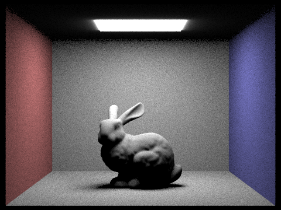
The hemisphere render has noticeably more grain on the walls and floor. Many random directions never reach the small ceiling light and contribute zero, so the estimate depends heavily on the few rays that do hit it. Sampling the light directly spends those rays on directions toward the emitter, producing smoother surfaces and a cleaner floor shadow at the same settings.
All four images use direct light sampling at 480 × 360 with one camera sample per pixel. Only the number of samples per area light changes.
With one light sample, the edge of the floor shadow is heavily speckled: each shading point gets only one visibility test. At 4 samples the transition is easier to see, and at 16 and 64 samples it becomes progressively smoother. The bunny's outline still has some jagged pixels because increasing light samples does not increase camera samples.
I use the camera ray's depth as the remaining bounce budget. The first surface can contribute its own emission, and each surface along the path can contribute direct lighting. To trace the next bounce, I sample a direction from the diffuse BSDF's cosine-weighted hemisphere, rotate it from the local shading frame to world space, and start the new ray just beyond zero distance to avoid a self-hit. If the ray hits another surface, I recurse with one less bounce and weight the returned light by the current BSDF times the cosine, divided by the sampling density.
Accumulated mode adds each contribution up to the requested depth, including visible emission. Individual-bounce mode keeps only the contribution at the requested depth. In both modes, depth 0 shows just the light source's emission.
Both scenes were rendered at 1024 samples per pixel with direct and indirect lighting.
Both Bunny images use 1024 samples per pixel. For the indirect-only view, I excluded the light panel's visible emission and skipped direct lighting at the camera ray's first hit, while keeping direct lighting at later hits.
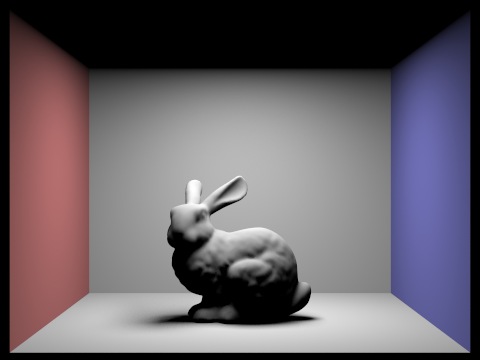
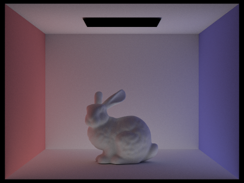
Direct light produces a clear floor shadow, but the bunny's underside and the ceiling stay dark. The indirect-only view shows how light reflected off the room fills those areas and carries red and blue from the walls onto the bunny and floor.
Each pair compares the same maximum depth at 1024 samples per pixel, with Russian Roulette disabled.
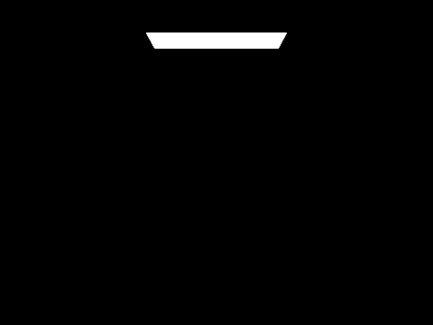
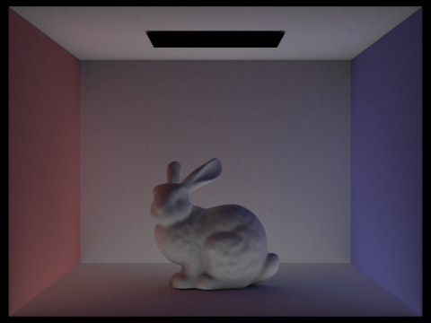
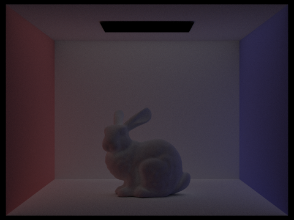
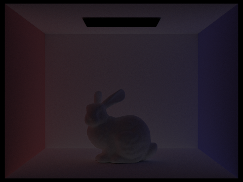
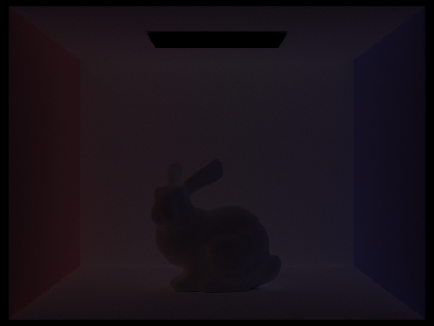
The second bounce makes the biggest visible difference: it lights the ceiling, reveals detail in the bunny's shadows, and adds color bleeding from the walls. The third bounce adds a weaker layer of fill, and the fourth and fifth contribute progressively less as surfaces absorb light. A basic rasterization render with only direct lighting can show the floor shadow, but it misses the reflected light that brightens the shadowed areas and carries color between surfaces.
When the depth allows indirect lighting, I always attempt the first indirect ray. At later eligible hits, I stop with probability 0.35. For paths that continue, I divide the recursive contribution by the continuation probability, 0.65, to compensate for the paths that stop. Direct lighting already computed at a hit is kept either way.
These accumulated Bunny renders use 1024 samples per pixel. The jump from depth 1 to 2 is much more visible than the jump from depth 4 to 100: most of the visible light comes from the early bounces, and the depth limit of 100 does not mean each path traces 100 bounces.
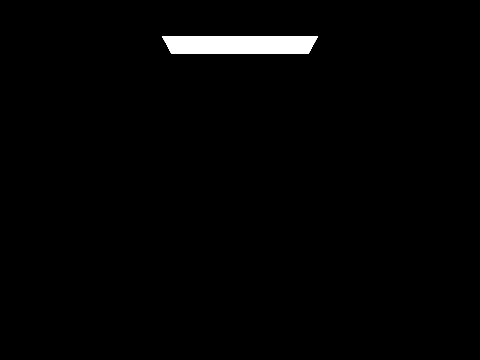
I kept the camera, resolution, maximum depth of 5, and four light samples fixed. At low sample counts, noise obscures the tread links and the shading under the body. By 64 samples the shapes are clear, and at 1024 samples the shading and edges are much smoother.
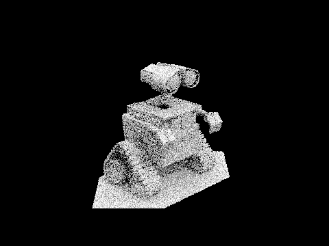
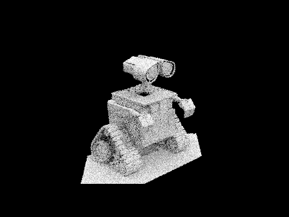
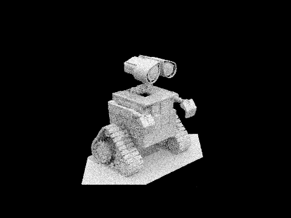
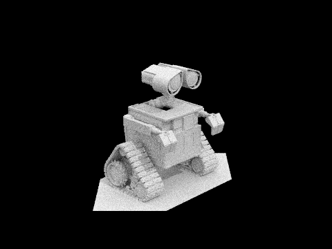
Some pixels settle on a stable color quickly, while others need many more rays. In raytrace_pixel, I keep a running sum of the RGB radiance for the final color. I also track the sum of the sample brightnesses and the sum of their squares, which lets me compute the mean and sample variance without storing every sample.
At the end of each batch, I estimate the half-width of a 95% confidence interval as 1.96 × standard deviation / √n, where n is the number of samples so far. If that half-width is at most 5% of the mean brightness, I stop tracing rays for that pixel. Otherwise, I keep sampling until the next check or until the pixel reaches the sample cap. I divide the RGB sum by the number of samples actually taken and store that same count in the sample-count buffer for the rate map.
Both scenes used a cap of 2048 samples per pixel, checks every 64 samples, a 5% tolerance, one sample per light, and a maximum ray depth of 5. In the rate maps, blue indicates fewer samples, green indicates an intermediate count, and red indicates pixels near or at the cap.
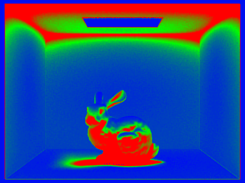
The ceiling light panel and much of the walls converge early. The bunny's underside, the floor shadow, and parts of the ceiling use more samples. In those areas, individual light paths can give quite different brightness values, so the estimate takes longer to settle.
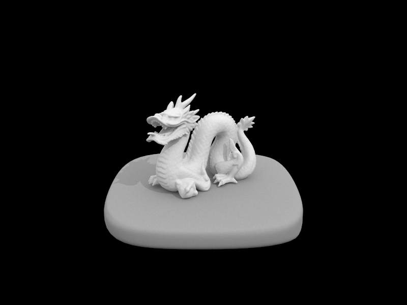
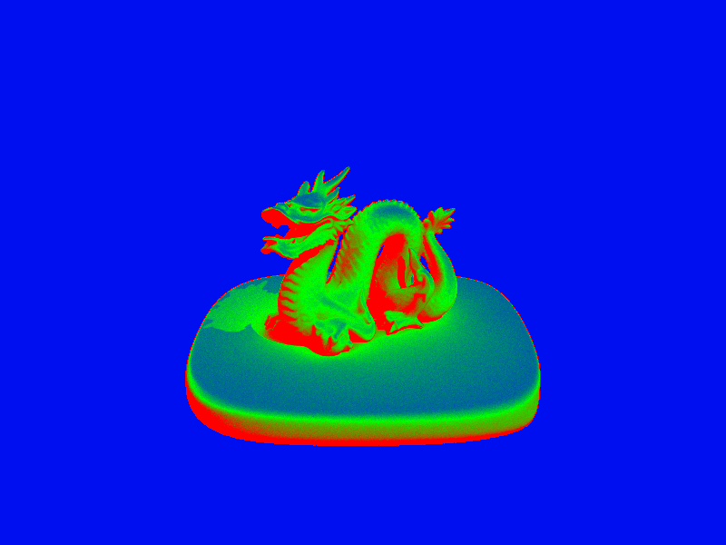
The empty background converges quickly, and much of the pedestal's top uses fewer samples than the dragon's mouth, feet, and shaded recesses. The pedestal rim also uses more samples. The variation within the model shows how the algorithm spends more rays where the brightness estimate is less stable.
With uniform random sampling, several camera rays can pass through nearly the same spot in a pixel while leaving other parts of it unsampled. For the jittered sampler, I divide each pixel into a 4 × 4 grid at 16 samples per pixel. The sample index selects a different cell each time, and a uniform random offset picks a point inside that cell. This gives every cell one sample while keeping the exact sample positions random.
I rendered the Bench scene twice at 480 × 360 with 16 camera samples per pixel, 32 samples per area light, and a maximum depth of 1. The camera and lighting settings stayed fixed, and the adaptive batch size of 64 ensured both runs used all 16 camera samples. Only the placement of the camera samples within each pixel changed.
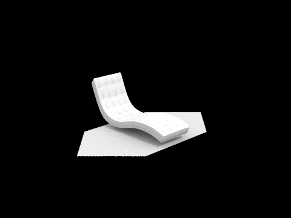
The difference is subtle at full size. The curved seat outline and parts of the diagonal platform edge look slightly more even with jittering, suggesting a modest reduction in visible aliasing. I did not see a clear reduction in surface grain. Jittering changes where camera rays land within the pixel, while the light samples used to shade their hits still introduce variation.
ChatGPT was used for debugging, HTML formatting, and writing improvement.